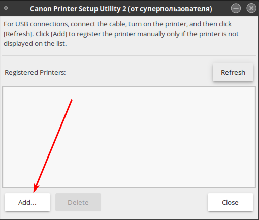
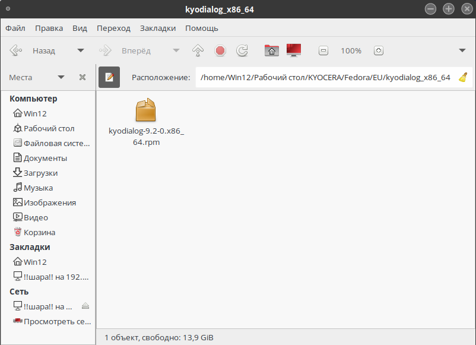
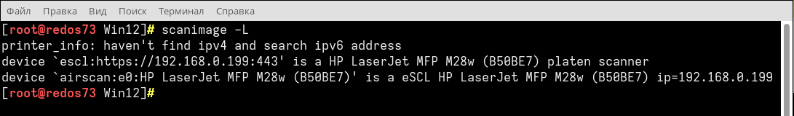
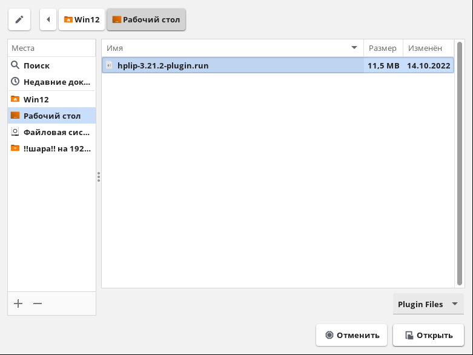

Создание ярлыка запуска(сеть)
Для создания ярлыка(кнопки запуска) необходимо нажать ПКМ по рабочему столу

Вбиваем произвольное имя ярлыка, и команду: simple-scan " "
Теперь необходимо найти сканер.
scanimage -L
В данном случае один принтер определяется сразу 2 видами драйверов Apple - AirScan, eSCL и HP - hpaio
Для сети необходимо выбрать c ip адресом и тот что быстрее.(не всегда фирменный сканер будет быстрее нежели аналоговый).
Необходимо скопировать всю строчку в одинарных ковычках: 'Найденный сканер в сети'

Пример как должно получиться:
После запуска ярлыка у нас будет автоматически выбран сканер:
Если стоит МФУ и пользователю необходимо сканировать из автоподатчика, то необходимо выбрать его в параметрах:
В ИНОМ СЛУЧАЕ ВЫЙДЕТ ОШИБКА ЧТО НЕ УДАЛОСЬ СВЯЗАТЬСЯ С ПРИНТЕРОМ
Также необходимо убедиться что параметры страницы заданы верно, иначе будет сканировать в нестандартном формате.

Canon
Устанавливаем linux-UFRII Driver для Linux

Распаковываем в любое место, открываем терминал в папке драйвера и запускаем bash скрипт.
./install.sh
Если выдаст ошибку, то необходимо выдать права для install.sh
chmod +x install.sh
Настройка I-SENSYS mf426dw (Сеть)
Для установки принтера после запуска скрипта необходимо выбрать его в предлагаемом каталоге.


Если не получается установить драйвер печати/сканера устанавливаем Capt Driver для Linux
Samsung
Скачиваем драйвера с официального сайта HP

Распаковываем архив в любое удобное место, открываем терминал из под SU
Запускаем скрипт инсталяции
./install.sh
Подтверждаем лицензионное соглашение
[root@redos73 uld] # ./install.sh
**** Running install ...
**** Press 'Enter' to continue or 'q' and then 'Enter' to quit. : ENTER
- - - - - - - - - - - - - - - - - - - - - - - - - - - - - - - - - - - - - - -
END-USER LICENSE AGREEMENT FOR SAMSUNG ELECTRONICS SOFTWARE PRODUCT
IMPORTANT-READ CAREFULLY: This Samsung Electronics End-User License Agreement ("
EULA") is a legal agreement between you (either an individual or a single entity
) and Samsung Electronics Co., Ltd. ("SAMSUNG ELECTRONICS") with respect to the
SAMSUNG ELECTRONICS software product intended to be used with the SAMSUNG device
s. The SAMSUNG ELECTRONICS software product may include associated software comp
onents, media, printed materials and "online" or electronic documentation develo
ped and provided by SAMSUNG ELECTRONICS ("SOFTWARE PRODUCT"). For all other thir
d party software products which may be supplied with or for the SAMSUNG devices,
your use of such software products shall be subject to separate terms of use an
d end user license agreements of such third parties. By installing, copying, d
ownloading or using the SOFTWARE PRODUCT, you agree to be bound by the terms of
this EULA. If you do not agree to the terms of this EULA, you may not install or
use the SOFTWARE PRODUCT.
1. GRANT OF LICENSE.
The SOFTWARE PRODUCT is licensed, not sold. Subject to the condition that you ar
e in compliance with the terms of this EULA, SAMSUNG ELECTRONICS grants you the
following licenses: you may install and use as many copies of the SOFTWARE PRODU
CT, or any prior version for the same operating system, for use strictly for the
personal use, on any computer owned and used by members. No other use, copying
or distribution of the SOFTWARE PRODUCT is permitted. Your use of the SOFTWARE P
RODUCT shall be subject to restrictions and limitations as specified in this EUL
A. You cannot modify the SOFTWARE PRODUCT or disable any licensing or control f
eatures of the SOFTWARE PRODUCT directly. If the SOFTWARE PRODUCT is licensed fo
r concurrent use, you may not allow more than the maximum number of authorized S
amsung devices and users to use the SOFTWARE PRODUCT concurrently. If you are i
nstalling this copy of the SOFTWARE PRODUCT as an upgrade, update, patch or enha
ncement of a prior release of the same SOFTWARE PRODUCT which was installed on t
he same computer, your rights under the prior license agreement for the SOFTWARE
PRODUCT are terminated, and all of your use of the SOFTWARE PRODUCT (including
its prior versions) are solely under the terms of this license agreement.
2. RESTRICTIONS AND LIMITATIONS ON USE OF THE SOFTWARE PRODUCT
PROHIBITION OF ALTERATION
Except to the extent such a restriction is unenforceable under local law, you ma
y not reverse engineer, decompile, or disassemble the SOFTWARE PRODUCT. The SOFT
WARE PRODUCT is licensed as a single product, and its component parts may not be
separated for use on more than one computer. Except to the extent such a restri
ction is unenforceable under local law, you may not modify, amend, or create der
ivative works of the SOFTWARE PRODUCT.
RENTAL
Except to the extent such a restriction is unenforceable under local law, you ma
y not lease, lend or rent the SOFTWARE PRODUCT to anyone.
3. COPYRIGHT.
The SOFTWARE PRODUCT is protected by copyright laws and international copyright
treaties, as well as other intellectual property laws and treaties that are rele
vant to your use of the SOFTWARE PRODUCT. All title and copyrights in and to the
SOFTWARE PRODUCT (including but not limited to any images, photographs, animati
ons, video, audio, music, text, and "applets" incorporated into the SOFTWARE PRO
DUCT) are owned by SAMSUNG ELECTRONICS.
MARKING AND MAINTENANCE OF COPYRIGHT You may not remove or change the marking of
the copyright from the SOFTWARE PRODUCT and all of its copies.
INTELLECTUAL PROPERTY RIGHTS All titles and copyrights in and of the SOFTWARE PR
ODUCT and any copies of the SOFTWARE PRODUCT are owned by SAMSUNG ELECTRONICS or
its suppliers. All title and intellectual property rights in and of the conten
t which may be accessed through use of the SOFTWARE PRODUCT is the property of t
he respective content owners and may be protected by the applicable copyright or
other intellectual property laws and treaties. Without SAMSUNG ELECTRONICS' pr
ior consent, the act of arbitrarily reproducing, copying or distributing this pr
oduct and relevant print materials, shall be material breach of this EULA, and v
iolation of the relevant copyright laws. In case of any violation or breach of t
erms of this EULA, SAMSUNG ELECTRONICS may hold you directly liable for compensa
tion.
THIRD PARTY WORKS. To the extent that any third party's intellectual property is
incorporated within the SOFTWARE PRODUCT, you agree that such third party is a
third-party beneficiary of the terms of this EULA to the extent of the third par
ty's license to SAMSUNG ELECTRONICS.
4. TRANSFER
To the extend permitted by the laws of your permanent residence, you may transfe
r this license and your original and any permitted backup copy of the SOFTWARE P
RODUCT to another authorized person or legal entity, provided: (1) the other per
son/legal entity receives a copy of this Agreement or other applicable Samsung S
oftware License Agreement and agrees to be bound by its terms and conditions; (2
) you erase or destroy all copies of the SOFTWARE PRODUCT; and (3) you at all ti
mes comply with all applicable export control laws and regulations.
5. WARRANTIES AND SUPPORT
SUPPORT: SAMSUNG ELECTRONICS may provide you with product support related to the
SOFTWARE PRODUCT. You may use and receive the support in accordance with the us
er guide, "online" documentation or the SAMSUNG ELECTRONICS' policies and progra
ms stipulated in the materials provided by SAMSUNG ELECTRONICS. Any third party
software that is provided to you as part of the SAMSUNG devices shall be subjec
t to terms and conditions of the third party, and support for such third party s
oftware products shall be subject to the support for such third party software m
ade available and provided by the third party. SAMSUNG ELECTRONICS does not have
any support obligations for such third party software products.
LIMITED WARRANTY: THE SOFTWARE PRODUCT IS PROVIDED TO YOU “AS IS.” SAMSUNG DOE
S NOT WARRANT THAT THE SOFTWARE PRODUCT IS ERROR OR BUG FREE, OR PERFORM OR FUNC
TION AS INTENDED. IN THE EVENT THAT THE SOFTWARE PRODUCT IS FOUND TO BE DEFECTI
VE, YOU MAY BE AFFORDED WITH THE THEN AVAILABLE PRODUCT SUPPORT. TO THE MAXIMUM
EXTENT PERMITTED BY APPLICABLE LAW, SAMSUNG AND ITS SUPPLIERS DISCLAIM ALL OTHE
R WARRANTIES AND CONDITIONS WITH REGARD TO OR ARISING OUT OF THE SOFTWARE PRODUC
T, EITHER EXPRESS OR IMPLIED, INCLUDING, BUT NOT LIMITED TO, IMPLIED WARRANTIES
OF MERCHANTABILITY, FITNESS FOR A PARTICULAR PURPOSE, NON-INFRINGEMENT AND/OR AC
CURACY OF INFORMATION. SOME JURISDICTIONS, COUNTRIES OR STATES DO NOT ALLOW THE
EXCLUSION OR LIMITATION OF CERTAIN WARRANTIES, SO THE ABOVE LIMITATION OR EXCLU
SION OF WARRANTIES MAY NOT APPLY TO YOU ONLY TO THE EXTENT SUCH APPLICATION IS C
ONTRARY TO THE LAWS OF RELEVANT JURISDICTIONS, COUNTRIES OR STATES.
SUPPORT INFORMATION: With respect to information that you provide to SAMSUNG ELE
CTRONICS as part of the support, SAMSUNG ELECTRONICS may use it with a view to s
upporting and developing its products, and all other use of such information sha
ll be subject to SAMSUNG ELECTRONICS’ then privacy policy.
6. CONCESSION
By installing and using the SOFTWARE PRODUCT, it is conceded that you have read
and understand the agreement, and agree to all of its terms and conditions. The
agreement takes precedence over any other agreements concluded between you and
SAMSUNG ELECTRONICS.
7. CONSENT TO USE OF DATA
SAMSUNG ELECTRONICS may collect and use technical information you provide in rel
ation to your installation and use of the SOFTWARE PRODUCT or the provision of s
upport services related to the SOFTWARE PRODUCT. All such information will be su
bject to SAMSUNG ELECTRONICS’ privacy policy.
8. TERMINATION
Without prejudice to any other rights, SAMSUNG ELECTRONICS may terminate this EU
LA or your rights under this EULA at any time if you fail to comply with the ter
ms and conditions of this EULA. Upon termination of your rights under this EULA
for any reason, or upon termination of the EULA itself, you must destroy all cop
ies of the SOFTWARE PRODUCT and all of its component parts in your possession (i
ncluding all component parts, the media and printed materials, any prior version
s, and this EULA). The terms of this paragraph shall survive any termination of
this EULA.
9. LIMITATION OF LIABILITY
You are solely and entirely liable for the performance or results you may obtain
by using the SOFTWARE PRODUCT and SAMSUNG ELECTRONICS shall not be liable for l
osses arising from your use of the SOFTWARE PRODUCT and for any losses arising f
rom your inability to use the SOFTWARE PRODUCT.
TO THE MAXIMUM EXTENT PERMITTED BY APPLICABLE LAW, IN NO EVENT SHALL SAMSUNG OR
ITS SUPPLIERS BE LIABLE FOR ANY SPECIAL, INCIDENTAL, INDIRECT, OR CONSEQUENTIAL
DAMAGES WHATSOEVER (INCLUDING, WITHOUT LIMITATION, DAMAGES FOR LOSS OF BUSINESS
PROFITS, BUSINESS INTERRUPTION, LOSS OF BUSINESS INFORMATION, OR ANY OTHER PECUN
IARY LOSS) ARISING OUT OF THE USE OF OR INABILITY TO USE THE SOFTWARE PRODUCT, E
VEN IF SAMSUNG HAS BEEN ADVISED OF THE POSSIBILITY OF SUCH DAMAGES. IN ANY CASE,
SAMSUNG'S ENTIRE LIABILITY UNDER ANY PROVISION OF THIS EULA SHALL BE LIMITED TO
THE GREATER OF THE AMOUNT ACTUALLY PAID BY YOU FOR THE SOFTWARE PRODUCT OR US$5
.00. SOME JURISDICTIONS, COUNTRIES OR STATES DO NOT ALLOW THE EXCLUSION OR LIMIT
ATION OF INCIDENTAL OR CONSEQUENTIAL DAMAGES, SO THE ABOVE LIMITATION OR EXCLUSI
ON MAY NOT APPLY TO YOU ONLY TO THE EXTENT SUCH APPLICATION IS CONTRARY TO THE L
AWS OF RELEVANT JURISDICTIONS, COUNTRIES OR STATES.
10. Others
If you have any questions regarding this agreement and other products, please co
ntact SAMSUNG ELECTRONICS.
- - - - - - - - - - - - - - - - - - - - - - - - - - - - - - - - - - - - - - -
**** Do you agree ? [y/n] : Y
**** The same version of Print driver is already installed.
**** The same version of Scan driver is already installed.
**** Install finished.
Kyocera
Качаем драйвера(обозначается как Linux Universal Driver) в некоторых случаях также будут доступны PPD файлы(обозначается как SANE driver) официальная страница Kyocera

Настройка TASKalfa 7002i (Сеть)
Для установки необходимо скачать Universal Driver (в ней будет лежать папка для Fedora), SANE (PPD драйвера) и дополнительный драйвер для печати.
В папке должны остаться только эти файлы и папки:
Переходим в папку Fedora и следуем до пути с установкой RPM файла
dnf install kyodialog-* -y

Теперь переходим в корневую папку и устанавливаем kyocera-sane-2.0
dnf install kyocera-sane-* -y
Устанавливаем по стандартному сценарию сетевой принтер, как только необходимо будет установить основной драйвер для печати выбираем наш PPD файл:

HP
До установки плагина:

После установки плагина:
Для работы МФУ/принтера необходимо установить библиотеку и плагин
Установка библиотеки
dnf install hplip-gui python3-distro -y
Установка плагина для сканирования
Для начала перейдем к скачиванию самого плагина на официальный сайт hp

Для корректной работы необходимо скачать плагин версии: hplip-3.21.2-plugin.run

Открывается файл в браузере, теперь его необходимо правильно сохранить
Необходимо удалить на конце формат .txt иначе файл не будет отображаться при установки самого плагина.
Должно получиться: hplip-3.21.2-plugin.run

Теперь необходимо запустить терминал из под пользователя, либо в существующем терминале выходим из под su:
exit
/usr/bin/hp-plugin
Если плагин уже установлен, его можно переустановить:
Ставим на второй чекбокс и выбираем файл:

При повторной переустановке может возникнуть данная ошибка:

Вводим пароль от учетной записи или пароль от root в зависимости от того что будет написано в Username:

После этого зависнет приложение и в терминале будет проходить процесс инсталяции:

Установка принтера
Заходим в настройки принтера HP

Выбираем метод подключения к принтеру, в моем случае принтер размещен в локальной сети
Стандартно ищется по SLP, поэтому чаще всего возникает ошибка о том, что не удалось найти принер

Для корректного поиска необходимо выбрать mDNS/Bonjour если поддерживается на устройстве(можно включить в настройках самого принтера) или же просто найти по ip-адресу.

Выбираем принтер:
Решенные проблемы которые встречаются при установке принтеров HP
Если проблема возникает с вводом пароля/добавлением принтера, то необходимо выдать/снять права у текущего пользователя.
Делается это следующим способом: